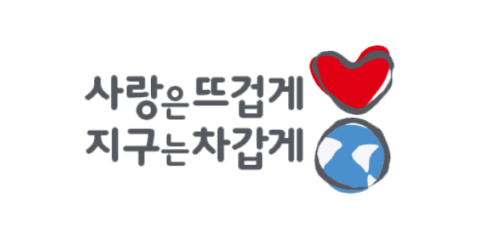
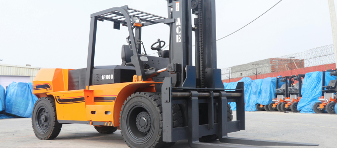
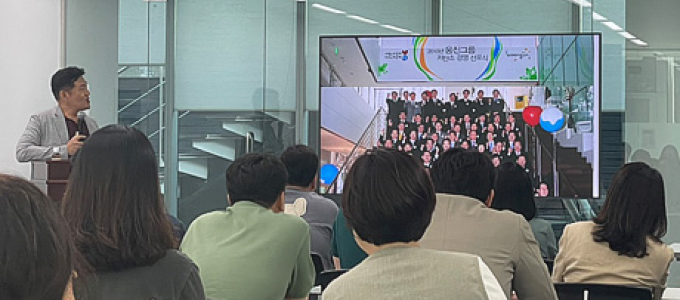

HOME > 지속가능경영 > 환경경영
환경경영

'사랑은 뜨겁게 지구는 차갑게'
‘사랑은 뜨겁게, 지구는 차갑게’는 가슴으로는 일, 도전, 변화, 조직, 고객, 사회를 뜨겁게 사랑하고, 손과 발로는 온실 가스를 줄여 지구를 차갑게 하는 행동을 적극적으로 실천하겠다는 웅진의 약속을 담은 것입니다.
-
01
- Global
- 글로벌 환경기업으로의 도약
- 변화를 받아들이고 경쟁력으로 승화시키는 우리의 능력을 바탕으로 신뢰받는 최고의 글로벌 환경기업이 되겠습니다.
-
02
- Eco-friendly System
- 청정생산을 통한 친환경시스템화
- 모든 제품의 개발에서 폐기까지 미래 성장을 위한 친환경시스템을 확립하겠습니다.
-
03
- Proactive Company
- 국제 기후변화 흐름에 능동적인 대응
- 국내외 기후변화 흐름을 예측하고 이를 선도하여 언제나 글로벌 친환경기업으로서의 리더십을 발휘하겠습니다.
-
04
- 3R
- 지속적인 환경 개선 투자
- 자연을 보호하고 폐기물을 최소화하기 위하여 3R [절약(Reduce), 재이용(Reuse), 재활용(Recycle)]을 생활화하는 환경혁신기업이 되겠습니다.
-
- 물류 협력사와 함께 하는 친환경경영
- 
- 물류 과정 중 CO2 발생량을 축소시키기 위해 운행 거리를 단축할 수 있는 다양한 방법을 고려하고 있습니다. 다양한 교재가 협력사별로 물류센터로 입고되던 방식을 개선하여 대형 차량이 협력사별로 순회하여 1회에 모아 입고하는 방식을 도입하여 비용 절감 및 CO2 발생량을 감소시키고 있습니다.(2010년 ~ 현재) 나아가 물류센터에서 사용하는 모든 지게차를 디젤이 아닌 전동(전기 충전)으로 전환하여 소음 및 매연(CO2) 발생을 최소화 하고 있습니다.
-
- 임직원 환경교육
- 
- 웅진은 사명감을 가지고 전체 임직원과 고객을 대상으로 환경교육과 캠페인을 연중 반기 단위로 정기시행하고 있습니다.
-
- 환경 관련 도서 개발
- 웅진은 기후변화와 생명의 소중함에 대한 교육 및 인식 확산을 위한 도서를 지속적으로 발간하여 대중들의 이해와 관심을 높이고 보전의 중요성을 인지시켜 환경에 대한 공공의식을 제고하는 환경경영 체계를 만들고있습니다. 출간된 도서들은 해외에서 좋은 반응을 얻으며, 번역되어 전세계에 수출되기도 했습니다. 어린이의 10년 후를 생각하는 웅진은 어린이가 살아갈 10년 후의 환경까지 지키기 위한 노력을 멈추지 않을 것입니다.